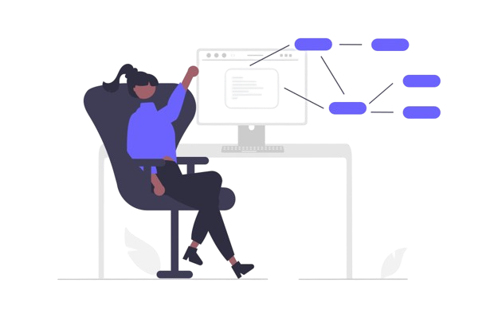
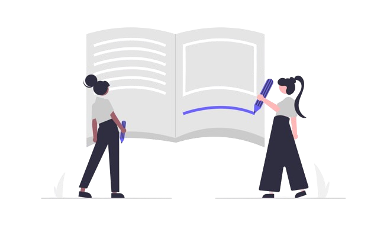

Hello World! Sejam bem-vindos à minha jornada pessoal. Aqui vou compartilhar um pouco sobre minha vida, carreira, crescimento pessoal e, quem sabe, até um toque de romance ❤️.
Então, eu sou a Tamires, atualmento tenho 24 anos, sou do dia 05/04/2000 e sou uma ariana bem fora do padrão. Adoro aprender coisas novas e me desafiar. Tenho umas habilidades bem inusitadas, tipo andar de monociclo, fazer malabares com até 4 bolas, tocar violão, guitarra, pandeiro e cavaquinho. E o mais divertido: sei dar um mortal pra trás... tá, essa é mentira, mas dentro da água eu arraso! Hehehe.
Aqui minha história irá começar quando eu me sentia presa dentro de mim mesma... Preciso confessar logo pra vocês!!! Eu sou HOMOSSEXUAL... Pronto, falei! Demorei um tempão pra me aceitar. Só fui dar chance pra uma garota aos 21 anos, porque finalmente me sentia segura: Maior de idade, com emprego, habilitação e pronta para todas as abobrinhas que eu já sabia que ia ouvir por ser quem eu sou.
Nesse caminho em busca da minha felicidade, encontrei alguém que me ensinou muito sobre mim mesma. Alguém que me faz querer ir atrás dos meus sonhos, que me fez perceber que eu preciso expressar o que sinto e não só guardar tudo dentro de mim. E alguém que me inspirou e me fez querer lutar pelo que eu realmente quero.
Depois de todo o lado chato dessa história de lidar com preconceito e familiares sem noção, e todo aquele blá blá blá de sempre, eu finalmente conquistei minha liberdade ao me aceitar e ver que a pessoa mais importante deste mundo pra mim também me aceitava. Claro que estou falando da minha mãe, a pessoa que fez o possível e o impossível para eu chegar até aqui com saúde, amor e amizade. ~ Esse comentário é especialmente para ela: "Eu amo muito você e agora a internet inteira sabe!"
Depois disso, eu já estava namorando, comemorando meu relacionamento assumido para os meus pais e vivendo muito bem com eles. Logo em seguida, minha namorada, que vou passar a chamar pelo nome, então, apresento a vocês: Anne!!! Hehehe.
A Anne percebeu que eu estava procrastinando demais, passando os dias jogando e vivendo sem muito propósito. Então, ela me deu aquele chacoalhão e me encorajou a voltar a estudar, fazer faculdade, um curso, e procurar algo que realmente fosse do meu interesse e que não se tornasse uma obrigação, mas algo prazeroso de fazer.
Então eu tive uma ideia... "Por que não fazer uma faculdade que tenha a ver com o fato de eu gostar de jogar videogame, ficar nas redes sociais, internet?". Foi aí que começou a minha jornada na área de programação...
Comecei a fazer faculdade de Análise e Desenvolvimento de Sistemas e também um curso técnico em Edificações. O segundo não tem nada a ver com programação, mas vai fazer sentido mais pra frente na minha história...
Logo percebi que os ensinamentos da faculdade eram meio rasos e decidi me aprofundar em linguagens de programação através de vídeos no YouTube. Devo tudo ao canal "Curso em Vídeo", onde o professor Guanabara me inspirou demais e me fez querer aprender cada vez mais.
Minha primeira linguagem de programação foi HTML5, depois CSS3 e Python. Agora estou animada para me aprofundar em JavaScript e explorar outras linguagens no futuro!
Hoje, em 2024, percebi que o mundo está migrando cada vez mais para o lado tecnológico. Estou super animada para trocar de carreira e ingressar na área de programação! Afinal, quem não quer fazer parte dessa revolução, não é mesmo?
E o melhor é que poderei trabalhar de casa, no home office, ou quem sabe viajar, pegar estrada por aí e trabalhar de onde estiver. Liberdade total!
E falando em trabalhar de casa, eu e a Anne financiamos uma casa juntas!!! Estamos radiantes por essa conquista e mal podemos esperar pela entrega da casa para deixá-la do nosso jeitinho.
Nossa casa é daquelas que são várias casinhas iguais, sabe? Mas elas vêm sem muro. Por isso, estou fazendo o curso técnico em Edificações para aprender a construir literalmente tudo, inclusive o muro da nossa casa!
Estamos guardando todo mês o máximo de dinheiro para podermos comprar e construir tudo o que precisarmos quando chegar a hora. Estamos nos planejando para o futuro que nos espera e muito ansiosas para colocar nossos planos em prática!
Eu mesma planejo estudar bastante para conseguir trabalhar em home office para empresas gringas. Sabemos que nosso dinheiro aqui no Brasil já não está valendo muito, então seria incrível ganhar em dólar, por exemplo!
Ei, você chegou até aqui! Espero que tenha gostado da minha história e que eu tenha inspirado você a buscar a sua felicidade, seja lá qual for. Agradeço por me ouvir (ou ler) e quem sabe até logo? Vamos seguir em frente e fazer acontecer!